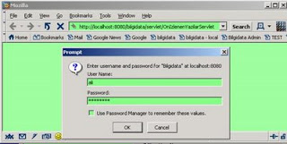

Tomcat ve Güvenlik
Aşağı yukarı her bilgi işlem uygulaması "sistem idarecisi" diye adlandırılabilecek kullanıcılar için özel bölgeler (sayfalar) tanımlar. Mesela, kullanici_ekle.jsp gibi bir sayfaya her kullanıcının girebilmesi güvenlik açısından tehlikeli olur. Bu sayfaları kullanıcı/şifre isteyerek korumamız gerekmektedir. Tomcat üzerinde bunu yapmanın en basit yolu Realm (alanlar) fikrini kullanmaktır.
Hatta eğer, kullacıya göre değişken türden sayfalara ihtiyacınız yok ise, isim/şifre ile sadece sayfaya "erişimi" kontrol etmek için Tomcat üzerinde kod bile yazmanıza gerek yok. Kullanıcı Tanımlaması TOMCATDIZINI/conf/tomcatusers.xml dosyasını metinyazar (notepad, emacs, vs) ile açın. Bu dosyada şu gibi veriler görebilirsiniz.
<tomcat-users><user name="tomcat" password="tomcat" roles="tomcat"
/><user name="role1" password="tomcat" roles="role1" /><user
name="both" password="tomcat" roles="tomcat,role1" /></tomcat-users>
Bu isimler ve şifreler Tomcat ile beraber paketten çıkıyor. İsterseniz
silebilirsiniz bile.. (Ama örnek oluşturması açısından tutsanız iyi
olur). Şimdi, ali adında bir kullanıcıya bakıcı rolü vermek istersek,
<security-constraint><display-name>skBakicisi</display-name><web-resource-collection>
<web-resource-name>skAdmin</web-resource-name>
<url-pattern>/servlet/KorunacakBirServletIsmi</url-pattern></web-resource-collection><auth-constraint>
<role-name>bakici</role-name></auth-constraint><user-data-constraint>
<transport-guarantee>NONE</transport-guarantee></user-data-constraint>
</security-constraint><login-config><auth-method>BASIC</auth-method><realm-name>sk
</realm-name></login-config><security-role><role-name>bakici</role-name></security-role>
Bu kadar! Artık tarayıcınız ile http://localhost:8080/servlet/KorunacakBirServletIsmi sayfasını ziyaret ettiğinizde, isim ve şifreniz sorulacaktır. Bunun bir resmi aşağıda görülebilir.

Yukarı